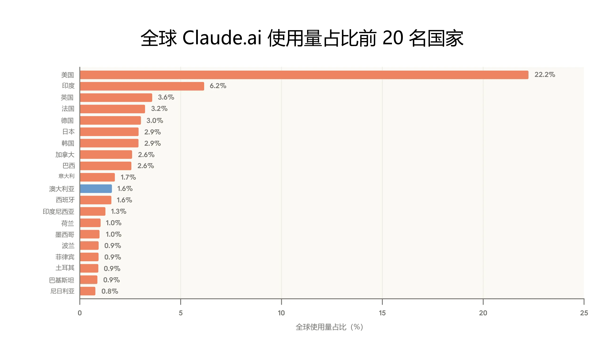
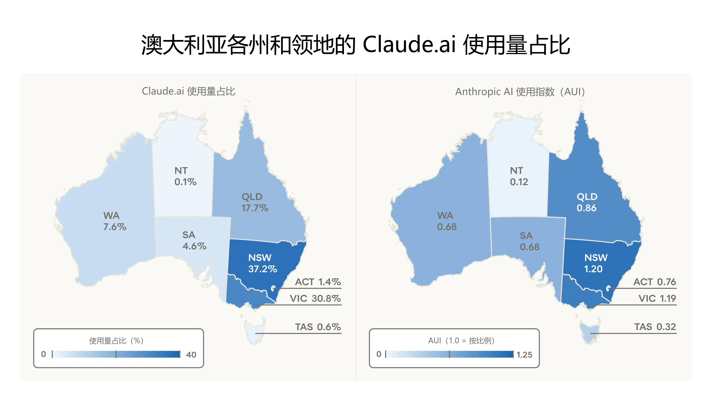
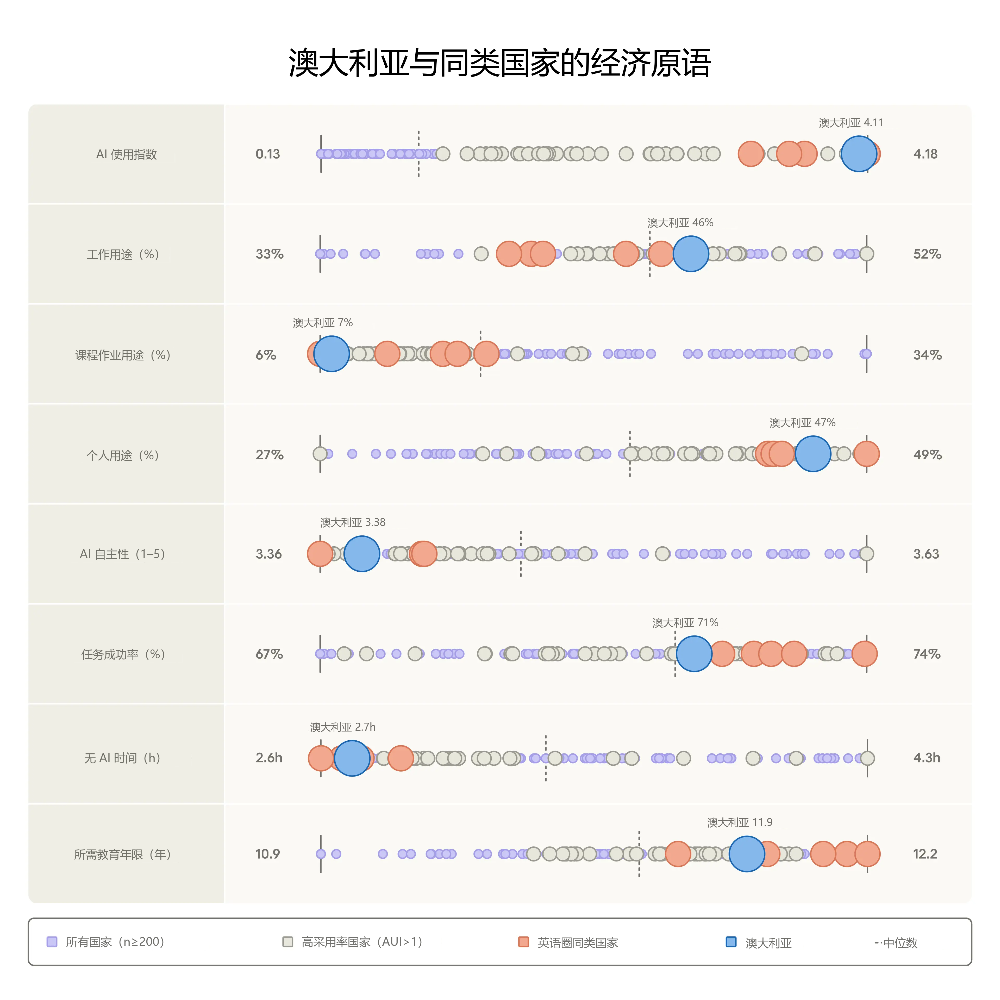
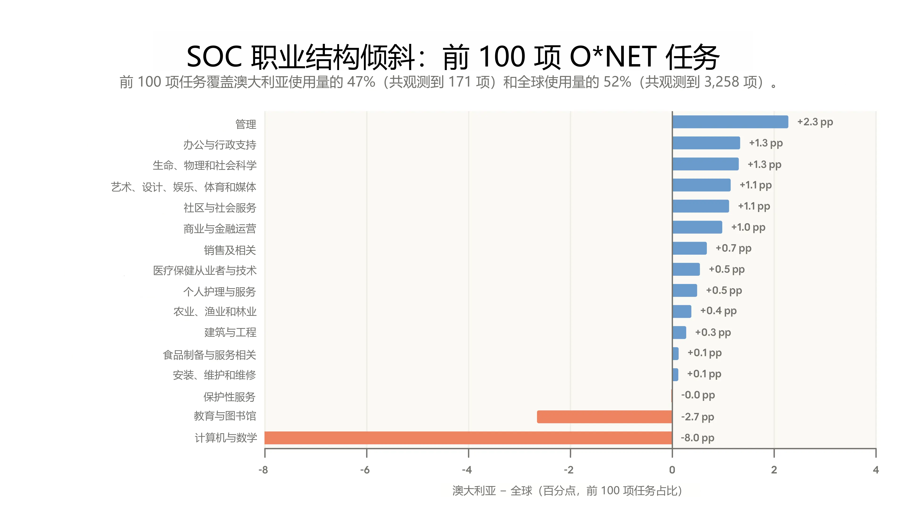

澳大利亚人如何使用Claude：来自Anthropic经济指数的发现
📖 中文摘要
专业术语注解
经济指数（Economic Index）：Anthropic定期发布AI真实使用数据的项目人均使用率指数（AUI）：按劳动人口规模调整后的AI使用强度指标O*NET：美国劳动部维护的职业任务数据库，用于给AI使用任务分类自主度（autonomy）：衡量用户在对话中把多少决策权交给AI的指标📄 中文全文
- 分类： 经济研究（Economic Research）
- 来源： https://www.anthropic.com/research/how-australia-uses-claude
经济研究（Economic Research）
2026 年 3 月 31 日
 Anthropic 正在向澳大利亚扩张。我们将在未来几周内在悉尼开设一个新办公室，并且我们已与澳大利亚政府签署了一份谅解备忘录，就 AI 安全研究开展合作，并支持澳大利亚国家 AI 计划的目标。为了纪念这一时刻，我们想更仔细地研究一下澳大利亚人是如何使用 Claude 的。
Anthropic 正在向澳大利亚扩张。我们将在未来几周内在悉尼开设一个新办公室，并且我们已与澳大利亚政府签署了一份谅解备忘录，就 AI 安全研究开展合作，并支持澳大利亚国家 AI 计划的目标。为了纪念这一时刻，我们想更仔细地研究一下澳大利亚人是如何使用 Claude 的。
**
主要发现** * 澳大利亚是 Claude 的领先采用者之一，占全球 Claude.ai 流量的 1.6%。按人均计算，澳大利亚人对 Claude 的使用量是其人口规模预期值的四倍以上。 * 澳大利亚国内的应用集中在两个州：新南威尔士州（占对话量的 37%）和维多利亚州（占 31%）。其他所有州和领地的人均 Claude 使用量都较低。 * 澳大利亚的用例构成总体与其英语圈（Anglosphere）同行一致：46% 的 Claude 对话用于工作，7% 用于课程作业，47% 用于个人用途。这是高收入、高采用率经济体的典型特征。 * 但澳大利亚的任务构成更加多样。与其他国家一样，计算机与数学（Computer & Mathematical）任务仍是我们数据集中最大的一类——但这一类目比全球基线低约 8 个百分点。这一差距被高于平均水平的办公、销售、管理和个人生活类任务所弥补。 * 澳大利亚用户倾向于让 Claude 处理更复杂的任务（以理解提示所需的估算受教育年限衡量）。与此同时，我们估计这些任务在_没有_ AI 的情况下所需的时间比平均水平约少 20%。换句话说，相对于世界其他地区使用 Claude 的方式，澳大利亚人的任务关联着更高的受教育水平，但更短的时长。 * 与许多其他高采用率经济体一样，澳大利亚的「AI 自主性」得分相对较低（1–5 评分标准上为 3.38），这表明澳大利亚人更倾向于以协作而非授权的方式使用 Claude。
总体高采用率，但各州和领地分布不均
澳大利亚占全球 Claude.ai 流量的 1.6%，在我们 2026 年 2 月的样本中排名第 11 位（图 1）。其 Anthropic AI 使用指数（Anthropic AI Usage Index，AUI）为 4.1，这意味着澳大利亚人的 Claude 使用量是其劳动年龄人口规模预测值的四倍以上。这使澳大利亚跻身人均采用率最高的国家之列，排名第 7，仅次于新加坡、以色列、卢森堡、瑞士、美国和加拿大。

图 1：按全球 Claude.ai 使用量占比排名前 20 的国家澳大利亚占全球 Claude.ai 消费者使用量的 1.6%，排名第 11。条形显示每个国家在 2026 年 2 月从 Claude.ai 采样的 100 万次对话中的占比。澳大利亚以蓝色突出显示。
在澳大利亚国内，使用集中在人口最多的州。新南威尔士州占对话量的 37.2%，其次是维多利亚州 30.8%、昆士兰州 17.7%，其余各州和领地合计占 14%（图 2）。各州和领地的劳动年龄人口规模在很大程度上解释了这一排序。然而，在调整了这一因素后，新南威尔士州的 AUI 为 1.20，维多利亚州为 1.19。这是仅有的两个人均采用率高于预期的州；其他每个州或领地的 AUI 都低于 1，其中采用率最低的是西澳大利亚州（0.68）、塔斯马尼亚州（0.32）和北领地（0.12）。

图 2：按州和领地划分的澳大利亚 Claude.ai 使用量占比新南威尔士州占澳大利亚 Claude.ai 使用量的最大份额（37.2%），其次是维多利亚州（30.8%）、昆士兰州（17.7%）、西澳大利亚州（7.6%）、南澳大利亚州（4.6%）、澳大利亚首都领地（1.4%）、塔斯马尼亚州（0.6%）和北领地（0.1%）。数据来自 2026 年 2 月。 与我们在各国之间观察到的收入与人均 Claude 使用量之间的强关联相反，收入似乎并不能预测澳大利亚各州和领地的采用率（图 3）。话虽如此，由于我们只能在这八个州和领地之间进行比较，收入与使用之间缺乏相关性只是提示性的，而非结论性的。 当地劳动力构成是解释为什么澳大利亚各州和领地的采用率与收入脱钩的可能因素：以矿业为主的西澳大利亚州（人均州生产总值 GSP 最高的州）人均使用量很低。北领地同样具有高人均 GSP 和低 AUI。这很可能反映了这些人口稀少的州和领地中，在 Claude 往往被采用的职业中工作的劳动者占比相对较小。澳大利亚首都领地的收入高于平均水平，但人均 Claude 使用量低于预期，这可能反映了其庞大的公共部门劳动力面临采用障碍。采用率最高的两个州——新南威尔士州和维多利亚州——收入略低于平均水平；这两个州的高采用率可能反映了金融、专业服务和科技行业劳动者的占比更高，而 Claude 在这些行业的使用率往往更高。
 图 3：澳大利亚各州和领地的 Anthropic AI 使用指数（AUI）与相对人均州生产总值（GSP）
图 3：澳大利亚各州和领地的 Anthropic AI 使用指数（AUI）与相对人均州生产总值（GSP）每个州的 AUI 与其人均州生产总值并列显示，后者以相对澳大利亚平均水平（101,438 美元）表示；两者都经过指数化处理，使 1.0 代表持平。各州和领地按 AUI 排序。来源：Anthropic 经济指数，2026 年 2 月；ABS 常住人口估计，2025 年 6 月季度；ABS 澳大利亚国民账户：州账户，2024–25。
澳大利亚对 Claude 的使用与其英语圈同行相似
我们的第四份经济指数报告引入了四项经济原语：用例构成、赋予 Claude 的自主程度、任务成功率和任务复杂度。图 4 显示了澳大利亚在每项指标上相对于其他英语圈国家（橙色）、其他高采用率经济体（灰色）以及我们样本中所有国家（紫色）的位置。 就 Claude 的使用方式而言，澳大利亚与其英语圈同行相似。46% 的澳大利亚对话被归类为与工作相关，接近中位数，处于英语圈区间的中部。课程作业占澳大利亚使用量的 7%，处于分布的低端（低于美国、英国和加拿大）；人均采用率较低的国家课程作业占比高出两到三倍。个人用途对话占 47%，接近分布的高端。 澳大利亚的这一模式与我们在经济原语报告中记录的人均收入与用例之间的关系一致：较富裕的国家往往课程作业占比更低，个人使用占比更高。

图 4：澳大利亚与同类国家的经济原语本图显示了澳大利亚与同类国家相比各项经济原语的值。蓝色大圆点代表澳大利亚。橙色圆点对应其他英语圈国家（美国、英国、加拿大、新西兰、爱尔兰）。灰色圆点是至少包含 200 次从 Claude.ai 采样的对话且 Anthropic AI 使用指数（AUI）高于 1 的国家。紫色小圆点代表所有其他至少包含 200 次采样对话的国家。
澳大利亚的 AI 自主性处于较低端，在 1–5 评分标准上为 3.38，其他英语圈国家与之接近。较低的自主性表明用户在对话中保留更多的决策控制权，而不是完全委托给模型。这与高采用率经济体往往以更协作、更少指令式的方式使用 Claude 是一致的。 澳大利亚在一项任务复杂度指标上低于中位数，但在另一项上接近顶端。澳大利亚的平均任务本身相对不那么耗时：一名熟练专业人员在没有 AI 的情况下完成该任务估计需要 2.7 小时，而跨国平均为 3.3 小时。但据估计，理解澳大利亚用户的提示需要 11.9 年的教育年限，这与其他英语圈国家相当，并高于全球中位数。这两种模式都符合我们在1 月经济指数报告中记录的跨国关系：Claude 采用强度与人类提示的复杂程度正相关，与「无 AI」任务时长的估计负相关。
在澳大利亚，更广泛的任务构成与更小的编码占比
澳大利亚的 Claude 使用比英语圈同类国家以及更广泛的全球平均水平更加多样。图 5 显示了每个地区使用量中被其最常见的 100 个任务所覆盖的比例（任务根据 ONET——一个描述整个经济中工作特征的任务分类法——进行分类）。此图中的较低值表示 Claude 被用于更广泛的任务范围，因为前 100 个任务只占据较小的份额。澳大利亚的前 100 个任务占其使用量的 47.3%，低于美国（47.7%）、英国（48.3%）和加拿大（50.2%），并比全球数字 52.3% 低五个百分点。
 _图 5：澳大利亚及同类英语圈国家前 100 个 ONET 任务中的任务集中度
_图 5：澳大利亚及同类英语圈国家前 100 个 ONET 任务中的任务集中度
本图显示了每个地区 Claude.ai 使用量的集中程度，以该地区最常见的 100 个 O*NET 任务所占已分类使用量的份额来衡量。数值越低表示使用分布越多样。在英语圈国家中，新西兰和爱尔兰被省略，因为观察到的不同任务少于 100 个。来源：Anthropic 经济指数，2026 年 2 月。
澳大利亚内部使用更广泛的多样性主要来自编码相关任务占比更低。图 6 显示了澳大利亚前 100 个任务与全球前 100 个任务按 SOC 大类（美国劳工统计局定义的宽泛职业类别）划分的构成差异。计算机与数学任务在澳大利亚低 8.0 个百分点。没有任何其他使用类别与全球平均值的差异接近这一量级，尽管教育相关任务比全球水平低近三个百分点。弥补性的增长分布在许多类别中，以管理类（+2.3 个百分点）、办公与行政支持类（+1.3 个百分点）以及生命、物理和社会科学类职业（+1.3 个百分点）为首。
条形显示每个 SOC 大类在澳大利亚前 100 个 O*NET 任务中的占比与该大类在全球前 100 个任务中的占比之间的差异（以百分点计）。正值表示在澳大利亚占比过高。前 100 个任务覆盖澳大利亚已分类使用量的 47%（观察到 171 个不同任务）和全球已分类使用量的 52%（观察到 3,258 个不同任务）。来源：Anthropic 经济指数，2026 年 2 月。
在单个请求簇（用户要求 Claude 做的事情的类别）层面，模式也是相似的（图 7）。相对于全球分布，澳大利亚占比最低的簇是一般编码辅助，占澳大利亚使用量的 13.5%，而全球为 16.8%。文档翻译也占比偏低，这与澳大利亚以英语为主的市场现状一致。占比最高的簇混合了个人用途（如个人生活管理（+1.9 个百分点）和健康与福祉支持（+1.8 个百分点））以及非技术性专业工作，包括工作场所通信（+1.7 个百分点）、商业文档（+1.6 个百分点）和财务指导（+1.3 个百分点）。
 图 7：相对于全球分布，澳大利亚占比最高和最低的请求簇**
图 7：相对于全球分布，澳大利亚占比最高和最低的请求簇**
条形显示每个簇在澳大利亚 Claude.ai 对话中的占比与其在全球对话中的占比之间的差异（以百分点计）。括号中的值分别显示澳大利亚和全球的占比。来源：Anthropic 经济指数，2026 年 2 月。_
高采用率国家通常更广泛地使用 Claude，因此澳大利亚编码占比更低有一部分是意料之中的。澳大利亚计算机与数学类 8.0 个百分点的缺口正好与英语圈平均 8.9 个百分点持平。澳大利亚与同行不同的地方在于用什么填补这个缺口：它更倾向于管理类（+2.3 个百分点，而英语圈为 +1.2 个百分点）和办公与行政支持类（+1.3 个百分点，而英语圈为 +0.1 个百分点），而不是教育指导类（−2.7 个百分点，而同行为 +1.6 个百分点）。
结论 澳大利亚是 Claude 人均采用率领先的国家之一，使用量是其劳动年龄人口规模预测值的四倍以上。这种使用的特征——以工作和个人用途为主而非课程作业，提示复杂但任务相对较短，且对 Claude 的授权较少——与其他英语圈经济体以及 Anthropic 经济指数中显而易见的跨国关系密切吻合。 澳大利亚更具特色的地方在于 Claude 用途的广度。澳大利亚的使用比全球总体更加多样，这几乎完全是因为编码相关工作占比更低；弥补性的增长分散在办公、销售、管理和个人生活类目中，而不是集中在任何单一类别。与其他高采用率国家一样，澳大利亚用户往往更多地与 Claude 协作，而不太经常委托决策。 在澳大利亚国内，采用集中在南澳大利亚州和维多利亚州，州一级的差异与劳动力构成而非人均收入相关——这与美国各州的模式一致，但与各国之间的收入梯度形成对比。
引用
@online{mccrory2026australiacountrybrief,
author = {Peter McCrory},
title = {How Australia Uses Claude: Findings from the Anthropic Economic Index},
date = {2026-03-31},
year = {2026},
url = {https://www.anthropic.com/research/australia-brief-economic-index-march-2026},
}
致谢
Keir Bradwell, Ria Strasser Galvis, Ryan Heller, Eva Lyubich, Jennifer Marintez, Maxim Massenkoff, Jared Mueller, Sarah Pollack
相关内容
进一步了解 Claude 的数学能力
一个未公开发布的研究版 Claude 在与黎曼猜想（Riemann hypothesis）相关的问题上取得了进展。它改进了满足该猜想的黎曼 zeta 函数零点比例的长期下界，将其从 41.6% 提高到 67.2%。 了解更多
用 Claude 发现密码学弱点
密码算法。第一个攻击显著削弱了 HAWK——一种为未来量子计算机能够破解现有标准的世界而构建的数字签名方案。第二个攻击则发现了一种攻击轮数缩减版 AES（使用最广泛的对称密码）的新方法。 了解更多
Project Pilot：AI 能控制无人机吗？
我们与 Andon Labs 合作开发了一系列评估，用于评估 AI 模型使用飞行无人机的能力，最终形成了一个新的基准测试：Drone-Bench。 了解更多
▸ 英文原文（点击展开）
How Australia Uses Claude: Findings from the Anthropic Economic Index
- Category: Economic Research
- Source: https://www.anthropic.com/research/how-australia-uses-claude
Economic Research
How Australia Uses Claude: Findings from the Anthropic Economic Index
Mar 31, 2026
Anthropic is expanding to Australia. We’re opening anew office in Sydney in the coming weeks, and we’ve signed a Memorandum of Understanding with the Australian government to cooperate on AI safety research and support the goals of Australia’s National AI Plan. To mark the occasion, we thought we’d look more closely into how Australians are using Claude.
**
Key Findings** * Australia is among the leading adopters of Claude, accounting for 1.6% of global Claude.ai traffic. Per capita, Australians’ use of Claude is more than four times higher than expected for the size of its population. * Adoption within Australia is concentrated in two states: New South Wales (37% of conversations) and Victoria (31%). Per capita Claude usage is lower in every other state and territory. * Australia's mix of use-cases generally tracks with its Anglosphere peers: 46% of Claude conversations are for work, 7% for coursework, 47% for personal use. This is a profile typical of high-income, high-adoption economies. * But Australia’s mix of tasks is more diverse. Like other countries, Computer & Mathematical tasks remain the single largest category in our dataset—but this category is about 8 percentage points below the global baseline. It’s offset by higher-than-average volumes of office, sales, management, and personal life tasks. * Users in Australia tend to prompt Claude for more complex tasks, as measured by the estimated years of schooling required to understand the prompt. At the same time, we estimate that the length of time these tasks would’ve taken without AI is roughly 20% less than average. In other words, relative to how the rest of the world uses Claude, Australians’ tasks are associated with a higher education level but a shorter duration. * Like many other high-adoption economies, Australia registers as having a relatively low “AI autonomy” score (3.38 on a 1–5 scale), which suggests that Australians use Claude in more collaborative, less delegated ways.
High adoption overall, unevenly distributed across states and territories
Australia accounts for 1.6% of global Claude.ai traffic, ranking eleventh among all countries in our February 2026 sample (Figure 1). Its Anthropic AI Usage Index (AUI) is 4.1, which means Australians use Claude over four times more than its working-age population would predict. This places Australia among the highest per capita adopters of Claude with ranking seventh behind Singapore, Israel, Luxembourg, Switzerland, the United States, and Canada.
Figure 1: Top 20 countries by share of global Claude.ai use
Australia accounts for 1.6% of global Claude.ai consumer use at rank 11. Bars show each country’s share of the 1M conversations sampled from Claude.ai in February 2026. Australia highlighted in blue.
Within Australia, usage is concentrated in the most populous states. New South Wales accounts for 37.2% of conversations, followed by Victoria at 30.8%, Queensland at 17.7%, and the remaining states and territories at a combined 14% (Figure 2). States and territories’ working age population size explains much of this ordering. However, adjusting for this, New South Wales has an AUI of 1.20 and Victoria an AUI of 1.19. These are the only two states with higher than expected per capita adoption; every other state or territory has an AUI below 1, with adoption lowest in Western Australia at 0.68, Tasmania at 0.32, and the Northern Territory at 0.12.
Figure 2: Share of Australia’s Claude.ai use by state and territory
New South Wales accounts for the largest share of Australia's Claude.ai use (37.2%), followed by Victoria (30.8%), Queensland (17.7%), Western Australia (7.6%), South Australia (4.6%), the Australian Capital Territory (1.4%), Tasmania (0.6%), and the Northern Territory (0.1%). Data from February 2026.
In contrast to the strong association between income and Claude usage per capita we observe across countries, income does not appear to predict adoption across Australian states and territories (Figure 3). That said, since we can only compare across the eight, the lack of correlation between income and usage is suggestive rather than conclusive.
Local workforce composition is a likely factor for why adoption appears decoupled from income across Australian states and territories: mining-heavy Western Australia, the state with the highest GSP per capita, has low usage per capita. The Northern Territory likewise has high GSP per capita and low AUI. This likely reflects these sparsely populated states and territories having a relatively smaller share of workers in occupations where Claude tends to be adopted. The Australian Capital Territory has above average income but lower-than-expected Claude usage per capita, which may reflect barriers to adoption among its large public sector workforce. The two states with the greatest adoption, New South Wales and Victoria, have slightly below average income; high adoption in these states likely reflects the higher share of workers in finance, professional services, and tech sectors, where Claude usage tends to be higher.
Figure 3: Anthropic AI Usage Index (AUI) and relative gross state product (GSP) per capita by state and territory in Australia
Each state's AUI is shown alongside its gross state product per capita, expressed relative to the Australian average ($101,438); both are indexed so that 1.0 represents parity. States and territories are ordered by AUI. Sources: Anthropic Economic Index, February 2026; ABS Estimated Resident Population, June quarter 2025; ABS Australian National Accounts: State Accounts, 2024–25.
Australia's use of Claude resembles its Anglosphere peers
Our fourth Economic Index report introduced four economic primitives: the use-case mix, the degree of autonomy afforded to Claude, task success, and task complexity. Figure 4 shows where Australia falls on each of these relative to other Anglosphere countries (in orange), other high-adoption economies (in grey), and all countries in our sample (in purple).
In terms of how Claude is used, Australia is similar to its Anglosphere peers. 46% of Australian conversations are classified as work-related, close to the median and in the middle of the Anglosphere range. Coursework accounts for 7% of Australian use, which is toward the bottom of the distribution (and below the US, UK, and Canada); countries with lower per capita adoption show coursework shares two to three times as high. The share of conversations that are for personal use, at 47%, is near the top of the distribution.
This pattern for Australia is consistent with the relationship we documented in our economic primitives report between per capita income and use cases: richer countries tend to have lower coursework shares and higher personal use shares.
Figure 4: Economic Primitives in Australia and peer countries
This figure shows the value of various economic primitives in Australia as compared to peer countries. The large blue dot represents Australia. Orange dots correspond to other Anglosphere countries (USA, UK, Canada, New Zealand, Ireland). Grey dots are countries with at least 200 sampled conversations from Claude.ai and with an Anthropic AI Usage Index (AUI) above 1. Small purple dots represent all other countries with at least 200 sampled conversations.
Australia registers toward the low end of AI autonomy, at 3.38 on a 1–5 scale, with other Anglosphere countries close by. Lower autonomy indicates that users retain more decision-making control in their conversations, rather than delegating fully to the model. This is consistent with high-adoption economies tending to use Claude in more collaborative, less directive ways. Australia sits below the median on one measure of task complexity, but toward the top on another. Australia’s average task itself is relatively less time-intensive: it would take a skilled professional an estimated 2.7 hours to complete the task without AI, compared to the cross-country average of 3.3 hours. But prompts from Australian users are estimated to require 11.9 years of schooling to understand, which is comparable to other Anglosphere countries and above the global median. Both patterns are consistent with the cross-country relationships we documented in our January Economic Index report, where the intensity of Claude adoption correlates positively with human prompt sophistication and negatively with estimates of the “no-AI” task duration.
In Australia, a broader task mix with a smaller coding share
Australia's Claude use is more diverse than usage among peer Anglosphere countries and relative to the broader global average. Figure 5 shows the share of each geography's usage that is covered by its 100 most common tasks (where tasks are classified according to ONET, a taxonomy of tasks that characterize jobs throughout the economy). Lower values on this figure indicate that Claude is used for a wider range of tasks, since the top 100 occupy a smaller share. Australia's top 100 tasks account for 47.3% of its usage, below the US (47.7%), the UK (48.3%), and Canada (50.2%), and five percentage points below the global figure of 52.3%.
_Figure 5: Task concentration among the top 100 ONET tasks in Australia and peer Anglosphere countries
This figure shows how concentrated each geography's Claude.ai usage is, measured as the share of classified usage captured by that geography's 100 most-common O*NET tasks. Lower values indicate a more diverse spread of uses. Among Anglosphere countries, New Zealand and Ireland are omitted because fewer than 100 distinct tasks were observed. Source: Anthropic Economic Index, February 2026.
The broader diversity of usage within Australia comes mostly from a lower share of coding-related tasks. Figure 6 shows how the composition of Australia's top 100 tasks differs from the global top 100 by SOC major group (broad occupation categories defined by the US Bureau of Labor Statistics). Computer and Mathematical tasks are 8.0 percentage points lower in Australia. No other category of use approaches that magnitude of difference to the global average, though education-related tasks are nearly three percentage points below global parity. The offsetting positives are spread across many groups, led by Management (+2.3pp), Office and Administrative Support (+1.3pp) and Life, Physical, and Social Science occupations (+1.3pp).
Figure 6: Composition of Australia's top 100 tasks relative to the global top 100, by SOC major group
Bars show the difference (in percentage points) between each SOC group's share of Australia's top 100 O*NET tasks and that group's share of the global top 100. Positive values indicate overrepresentation in Australia. Top 100 tasks cover 47% of Australia's classified usage (171 distinct tasks observed) and 52% of global classified usage (3,258 distinct tasks observed). Source: Anthropic Economic Index, February 2026.
At the level of individual request clusters—categories of what users ask Claude to do—the pattern is similar (Figure 7). The cluster that is most underrepresented in Australia relative to the global distribution is general coding assistance, at 13.5% of Australian use compared to 16.8% globally. Document translation is also underrepresented, consistent with Australia being a predominantly English-speaking market. The most overrepresented clusters are a mix of personal use (such as personal life management (+1.9pp) and health and well-being support (+1.8pp)), and non-technical professional work, including workplace correspondence (+1.7pp), business documents (+1.6pp), and financial guidance (+1.3pp).
Figure 7: Request clusters most over- and underrepresented in Australia relative to the global distribution**
Bars show the difference (in percentage points) between each cluster's share of Australian Claude.ai conversations and its share of global conversations. Values in parentheses show the Australian and global shares respectively. Source: Anthropic Economic Index, February 2026._
Higher-adoption countries generally use Claude more broadly, so part of Australia's lower coding share is expected. Australia's Computer and Mathematical shortfall of 8.0pp sits right in line with the Anglosphere average of 8.9pp. Where Australia diverges from its peers is in what fills the gap: it leans further into Management (+2.3pp vs the Anglosphere's +1.2pp) and Office and Administrative Support (+1.3pp vs +0.1pp), rather than Educational Instruction (−2.7pp vs +1.6pp for peers).
Conclusion Australia is among the leading per capita adopters of Claude, with usage more than four times what its working-age population would predict. The character of that usage—predominantly work and personal rather than coursework, sophisticated prompts addressing relatively short tasks, and with less delegation to Claude—closely tracks other Anglosphere economies and cross-country relationships evident within the Anthropic Economic Index. Where Australia is more distinctive is in the breadth of what Claude is used for. Australian usage is more diverse than the global aggregate, almost entirely because of a lower share of coding-related work; offsetting gains are spread across office, sales, management, and personal life categories rather than concentrated in any one category. As with other high adoption countries, users in Australia tend to collaborate more with Claude and delegate decision-making less often. Within Australia, adoption is concentrated in New South Wales and Victoria, and the state-level variation tracks workforce composition rather than income per capita—consistent with the pattern across US states but in contrast to the income gradient across countries.
Citation
@online{mccrory2026australiacountrybrief,
author = {Peter McCrory},
title = {How Australia Uses Claude: Findings from the Anthropic Economic Index},
date = {2026-03-31},
year = {2026},
url = {https://www.anthropic.com/research/australia-brief-economic-index-march-2026},
}
Acknowledgements
Keir Bradwell, Ria Strasser Galvis, Ryan Heller, Eva Lyubich, Jennifer Marintez, Maxim Massenkoff, Jared Mueller, Sarah Pollack
Related content
Learning more about Claude's mathematical capabilities
An unreleased research version of Claude has made strides on a problem related to the Riemann hypothesis. It improved a longstanding lower bound for the fraction of zeros of the Riemann zeta function that satisfy the hypothesis, increasing it from 41.6% to 67.2%. Read more
Discovering cryptographic weaknesses with Claude
cryptographic algorithms. The first attack significantly weakens HAWK, a digital signature scheme that was built for a future world where quantum computers are able to break existing standards. The second identifies a new way to attack round-reduced AES, the most widely used symmetric cipher. Read more
Project Pilot: Can AI control a drone?
Working with Andon Labs, we’ve developed a new series of evaluations that assess AI models’ ability to use a flying drone, culminating in a new benchmark: Drone-Bench. Read more